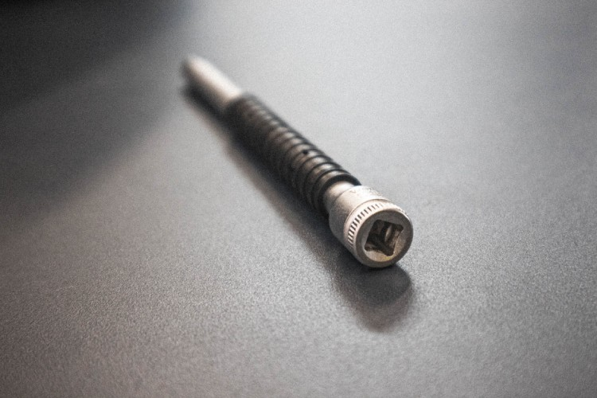
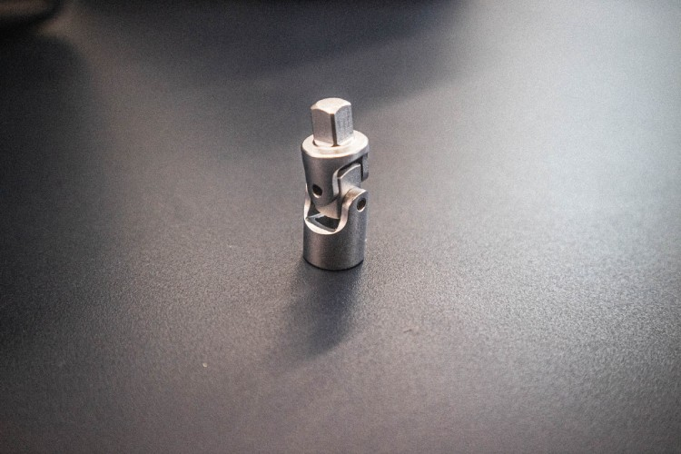

7.ด้ามขันแบบตัวที (Sliding T handle)
ด้ามขันแบบตัวที (Sliding T handle) หรือที่รู้จักกันในชื่อ ด้ามขันแบบ T เลื่อน เป็นเครื่องมือช่างที่ใช้สำหรับขันน็อตและสลักเกลียว โดยมีด้ามจับรูปตัว T ที่มีกลไกเลื่อน ช่วยให้ผู้ใช้สามารถปรับความยาวของด้ามจับได้เพื่อเพิ่มแรงบิด เหมาะอย่างยิ่งสำหรับสถานการณ์ที่พื้นที่จำกัดในการใช้ประแจซ็อกเก็ตทั่วไป หรือสามารถใช้ต่อกับประแจกระบอกเพื่อขันหรือคลายน็อตที่ต้องการ โดยการใช้งานจะสามารถออกแรงได้มากขั้นและทำได้เร็วมากขึ้น

8.ก้านต่อ (Extension)
ก้านต่อมีหลายขนาด มักใช้ต่อกับประแจกระบอกและด้ามขันประแจซ็อกเก็ต ไขควง หรือประแจ เพื่อเพิ่มความยาว สำหรับชิ้นงานที่อยู่ลึกหรืออยู่ในมุมที่เข้าถึงยากก้านต่อยังช่วยเพิ่มแรงบิดในการขันน็อตและสลักเกลียวที่ยึดแน่นก้านต่อช่วยให้สามารถทำงานกับเครื่องมือไฟฟ้าหรือเครื่องมืออันตรายได้โดยไม่ต้องสัมผัสกับชิ้นงานโดยตรง ช่วยลดความเสี่ยงต่อการบาดเจ็บได้อีกด้วย

8.ข้อต่ออ่อน (Universal Joint)
ข้อต่ออ่อน (Universal Joint) เป็นอุปกรณ์ส่งถ่ายกำลังการหมุนที่ใช้เชื่อมต่อเพลาหรือแกนหมุนสองอันเข้าด้วยกัน เพื่อให้สามารถหมุนเอียงหรือเปลี่ยนมุมได้ โดยที่เพลาทั้งสองอันยังคงหมุนในทิศทางเดียวกัน ข้อต่ออ่อนมีบทบาทสำคัญในกลไกต่างๆ มากมาย เช่น เครื่องยนต์ เกียร์ พวงมาลัย และเครื่องจักรกลต่างๆ ข้อต่ออ่อนทั่วไปสามารถเอียงได้ประมาณ 45 องศา ข้อต่ออ่อนบางประเภทสามารถเอียงได้มากกว่า 90 องศา และยังแยกได้อีกหลายประเภทเช่น ข้อต่ออ่อนแบบกากบาท ข้อต่ออ่อนแบบลูกกลิ้ง ข้อต่ออ่อนแบบโฮโมไคเนติก เป็นต้น